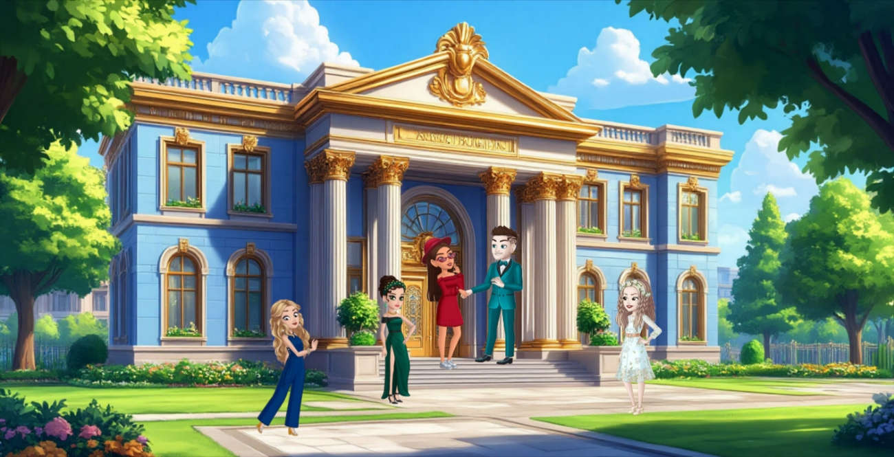
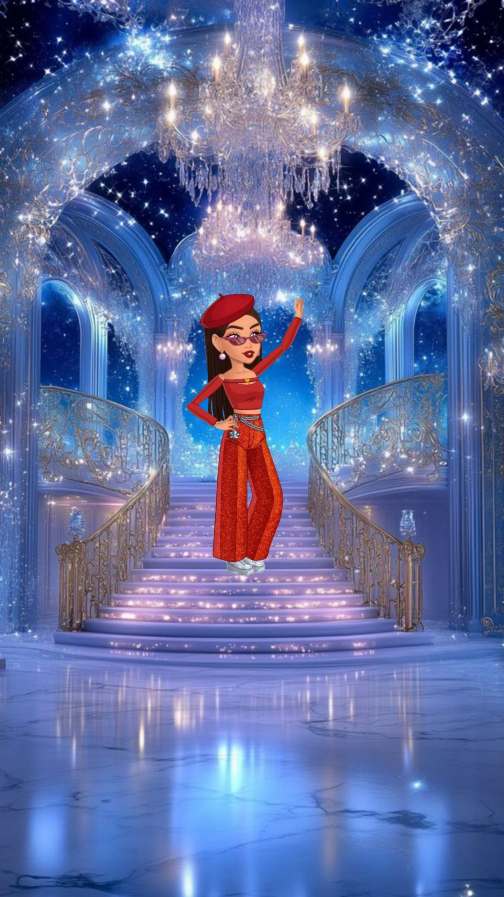
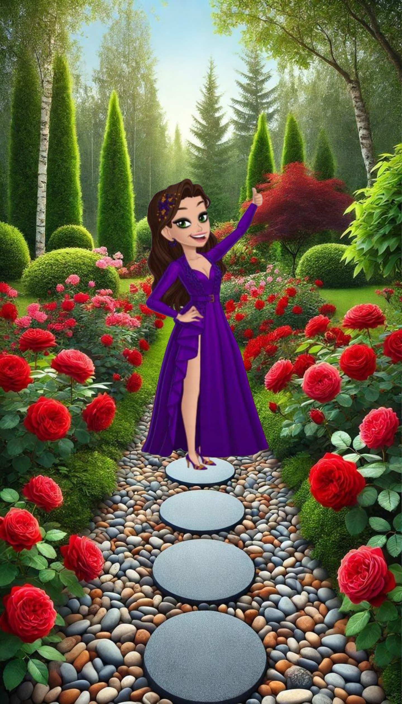
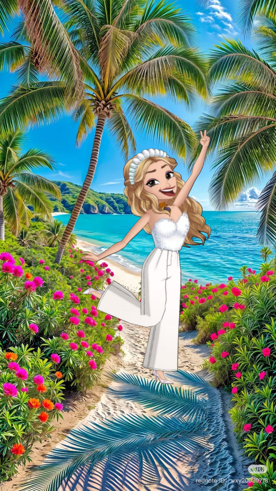
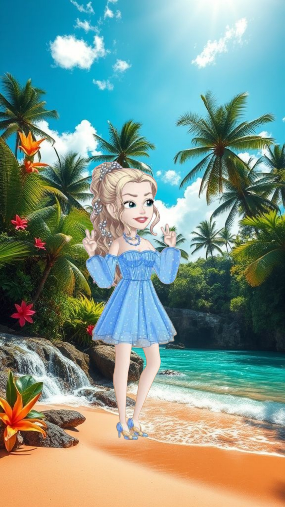
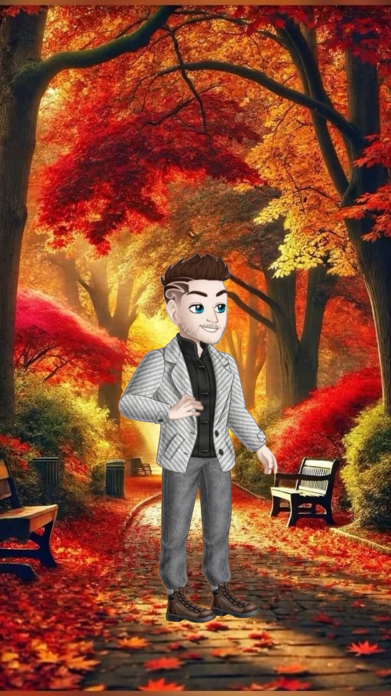

АДМИНИСТРАЦИЯ ГИЛЬДИИ «ФОРТУТТИ»

МОЗГ «ФОРТУТТИ»

Основатель и бессменный лидер гильдии. Организатор всех мероприятий и главный источник вдохновения для участников.
С появлением игры Cooking Diary, Виктория вдохновилась на создание своего сообщества, окрестив его "ФорТутти". Вика – удивительный человек, сочетающий в себе мудрость и справедливость, личность, пронизанная внутренним светом, хотя порой может проявить и "колючесть"🤣, но всегда по существу. Она любит общение, с удовольствием смеется над шутками и постоянно генерирует разнообразные флешмобы и внутриигровые активности, чтобы сделать времяпрепровождение для членов гильдии еще более интересным, увлекательным и запоминающимся.
Под ее чутким руководством "ФорТутти" превратился из простого игрового объединения в сплоченную команду и настоящую семью. Вика всегда готова поделиться опытом, дать совет и просто выслушать, создавая атмосферу доверия и взаимопонимания.
Игроки приходят и уходят, но костяк гильдии остается неизменным. Это те, кто с самого начала поверил в Вику и в ее идею создания дружного сообщества. Они помнят те времена, когда ФорТутти только начинала свой путь, и с гордостью смотрят на то, во что она превратилась сегодня.
Виктория не просто участник – она увлечена игрой, любит свою гильдию - вкладывая в нее частичку своей души. Ее энтузиазм передается окружающим, а креативные идеи неиссякаемы. Благодаря ей, каждый день в "ФорТутти" – это новое приключение, наполненное смехом, дружбой и, конечно же, вкусными кулинарными шедеврами. Она – душа и сердце "ФорТутти", движущая сила и залог позитивного настроения для всех ее членов.
Именно благодаря ее неустанной энергии и преданности, "ФорТутти" остается не просто гильдией, а местом, где каждый может найти единомышленников, поддержку и просто хорошо провести время. Вика создает уникальную атмосферу, в которой ценятся не только игровые достижения, но и человеческие качества – доброта, отзывчивость, умение работать в команде. Она верит, что успех гильдии строится не только на сильных игроках, но и на крепких дружеских связях, и делает все возможное, чтобы эти связи крепли день ото дня.
Виктория – настоящий лидер, умеющий вдохновлять и мотивировать. Она не боится брать на себя ответственность, принимать решения и вести за собой команду. При этом она всегда открыта к новым идеям и предложениям, приветствуя инициативность и креативность. Благодаря такому подходу, "ФорТутти" постоянно развивается и совершенствуется, оставаясь одной из самых интересных и перспективных гильдий в Cooking Diary.
Вика умеет находить баланс между игрой и непринужденным общением. Она понимает, что игра должна приносить удовольствие, и старается создать такую атмосферу, в которой каждый игрок чувствует себя комфортно и расслабленно. Она ценит юмор и позитив, и всегда готова поддержать шутку или поднять настроение. Именно поэтому в "ФорТутти" так много смеха и радости, а время, проведенное вместе, пролетает незаметно.
Вклад Виктории в развитие "ФорТутти" неоценим. Она не просто создала гильдию, она создала целый мир, в котором каждый может найти себя, раскрыть свой потенциал и стать частью чего-то большего. Ее преданность, энтузиазм и любовь делают "ФорТутти" особенным местом, которое игроки ценят и любят. И пока у руля стоит такая вдохновляющая личность, как Виктория, "ФорТутти" будет продолжать расти, развиваться и радовать своих участников новыми приключениями и достижениями.

Админ гильдии - отвечает за стратегическое развитие и набор новых участников.
Наталек – не просто админ, а настоящая душа гильдии ФорТутти! Этот позитивный и добрый человечек – как солнечный луч в нашем игровом царстве. Всегда готова протянуть руку помощи, будто супергерой с бесконечным запасом терпения и отзывчивости.
Она не просто "взяла на себя часть обязанностей", она взвалила их на свои хрупкие плечи и превратила в увлекательный квест! Иногда кажется, что у Наталек есть волшебная палочка, которой она взмахивает, чтобы разрешить все проблемы и сделать жизнь гильдии ярче и интереснее. Но на самом деле, вся магия кроется в ее искренней любви к игре и к людям, которые ее окружают. Она вкладывает в гильдию частичку своей души, и это чувствуется в каждом ее действии.
Благодаря Наталек, ФорТутти – это не просто гильдия, это семья. Семья, где царит взаимопонимание, поддержка и, конечно же, безграничное веселье. Мы невероятно благодарны ей за ее труд, преданность и за то, что она делает нашу игру такой особенной.
Если бы существовала медаль за доброту и отзывчивость, Наталек точно забрала бы золото, серебро и бронзу! Она не просто админ, она человек, который делает каждый день в ФорТутти чуточку лучше. Так давайте же поблагодарим ее за это громкими аплодисментами и бурными овациями! Ведь такие люди – настоящая находка, и нам невероятно повезло, что она с нами!
КРЕАТИВЩИКИ «ФОРТУТТИ»

Волшебница - превращающая игру в феерию с коллажами!
Ах, Нась! Просто кладезь креатива и нескончаемый источник позитива в одном очаровательном человеке! Эта фея коллажей не просто талантлива – она волшебница, превращающая обыденность в феерию красок и форм!
Ее коллажи – это не просто изображения, это искреннее отражение ее жизнерадостного и творческого духа, которым она щедро делится с нами.
В гильдии ФорТутти ее вклад неоценим. Нась взяла на себя важную миссию – сделать нашу игру еще более насыщенной и увлекательной, привнести в нее элемент праздника и доброго юмора.
Она – креативный двигатель, ответственный за визуальное оформление ключевых моментов нашей гильдейской жизни. Поздравления с достижением знакового количества улыбок, персональные поздравления с днем рождения для каждого участника, а также итоговые обзоры по завершению игрового сезона – все это создается из-под ее умелых рук.
Каждый коллаж, созданный Нась, – это маленькое произведение искусства, наполненное теплом, вниманием и искренней заботой о каждом члене нашей гильдии. Ее работы не только радуют глаз, но и создают атмосферу сплоченности и позитива, что делает наше времяпрепровождение в игре ещё более приятным и запоминающимся. Нась – это настоящий источник хорошего настроения и ценный член команды ФорТутти.
Так что, если вы вдруг увидите летящий по экрану коллаж, знайте: это Нась творит магию! И если у вас вдруг загрустил пиксель, или смайлик потерял улыбку, просто взгляните на ее работы, и мир снова заиграет всеми цветами радуги! Нась, спасибо, что ты есть! И помни: твой талант – это наше сокровище, которое мы холим, лелеем и обожаем! Продолжай творить чудеса, а мы будем с замиранием сердца ждать каждого нового шедевра!

Креативный генератор - коллажи флешмобов врываются весельем!
Ольчик – наша загадочная вдохновительница! Чаще молчалива, словно ниндзя, но когда уж прорвет плотину общения – держитесь! Без искрометного юмора точно не обойдется! В общем и целом, если коротко, Ольчик – душа компании, генератор позитива и просто отзывчивый человек.
Но это еще не все! Когда встает вопрос, в какой бы флешмоб поиграть и хочется чего-то нового, а идеи зашли в тупик... Вот тут приходит на помощь Ольчик - придумает и подкинет интересные идеи для флешмобов. Ольчик – наш гуру креатива! А кто потом все эти идеи воплощает в жизнь в виде убойных коллажей? Снова она! Ольчик – наш главный художник-оформитель, мастер фотошопа и просто волшебница визуализации. Кажется, креатив у нее плещет через край, озаряя всю нашу гильдию ФорТутти яркими искрами! Она мастерски создает визуальные шедевры, которые добавляют нашим флешмобам и играм еще больше красок и веселья.
Так что, когда видите фееричный коллаж от ФорТутти – знайте, там точно приложила руку наша Ольчик! Без неё наша гильдия была бы, ну, как пицца без сыра – вроде и вкусно, но чего-то явно не хватает! Продолжай творить, выдумывать, пробовать – а мы будем восхищаться и вдохновляться твоим талантом! Спасибо, Ольчик, за твой талант и неиссякаемый энтузиазм! Ты – наша настоящая звезда!

Demon
Отвечает за юмор и хорошее позитивное настроение в гильдии.
Изначально, Демон казалась неприступным айсбергом, скованным молчанием. Но магия ФорТутти, словно лучи весеннего солнца, растопила лед ее сдержанности. Сектанты гильдии, искусные в искусстве душевного тепла, пробудили в ней дремлющие грани личности.
Демон – это словно фейерверк, внезапно расцветающий в сером будничном небе. Веселая, как звон колокольчиков, она легко становится душой компании, притягивая к себе внимание и озаряя все вокруг своим искрометным юмором. Общительность – ее второе имя, она словно магнит, притягивающий к себе людей, жаждущих тепла и поддержки. И действительно, Демон всегда готова прийти на помощь, подсказать верное решение, поделиться своим опытом и знаниями. Но не стоит обольщаться ее ангельской улыбкой - за ней скрыт сильный характер, требующий терпения и способный закалить даже самую стойкую натуру.
Однако, если суметь пережить бурю эмоций и упрямства, то за этой броней откроется – добрая и отзывчивая душа, готовая разделить радость и горе. Она – настоящий генератор юмора, способный рассмешить до слез. Общение с ней – это легкий и непринужденный полет, наполненный шутками, приколами и позитивом.
С ней никогда не бывает скучно, ведь ее ум постоянно генерирует новые идеи и проекты. Противоречивость – это ее изюминка, которая делает ее такой интересной и непредсказуемой. Любопытство ведет ее по неизведанным тропам, а целеустремленность помогает достигать поставленных целей. Она переменчива, как весенний ветер, но всегда остается настоящей, ранимой и открытой.
Творчество - еще одна важная часть Демона, но муза посещает ее лишь по настроению, одаривая безумными, интересными, прикольными и смешными идеями. В такие моменты она становится настоящим воплощением креатива, способным создать нечто уникальное и незабываемое.
Демон - сердце юмора и источник нескончаемого позитива в гильдии ФорТутти. Этот титул заслужен не только благодаря природному остроумию, но и той атмосфере радости, которую Демон щедро дарит каждому члену ФорТутти.